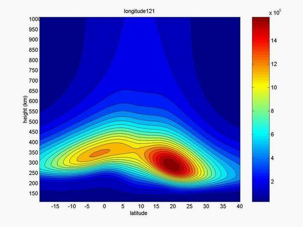
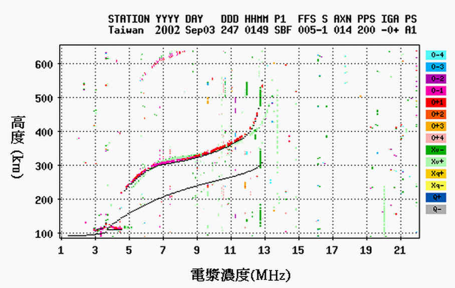
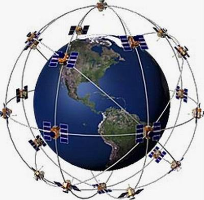
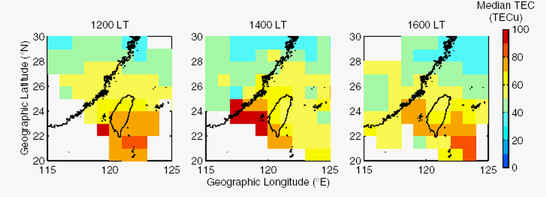
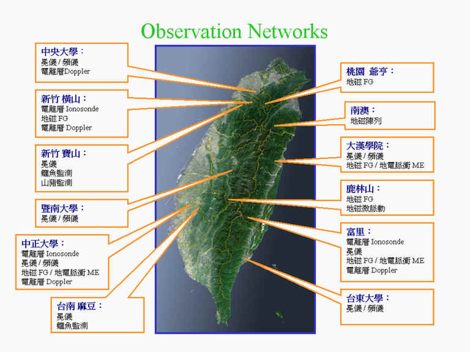

物質有四態，固態、液態、氣態和電漿態。宇宙中95%是以電漿態存在。靠近地球最大的電漿實驗場所即是在距離地表50公里到數千公里之高層大氣中。由於其中充滿了電子與各種正離子，因此又稱之為電離層。本實驗室設有多種儀器、雷達和衛星接收機，並利用各種模型研究太陽風暴、地球磁場擾動、中性大氣層之惡劣天氣，乃至於地震對電離層之影響。
利用電離層模型可模擬台灣區域及全球之電子濃度四維（空間＋時間）變化。圖一為利用國際參考電離層模型模擬台灣經度120°E電子濃度之緯度與高度的分布圖，其中台灣上空300到500公里高處含有世界最大之電漿濃度。
本實驗室設有電離層雷達、衛星接收機、磁力計、大氣電場探針等觀測網。圖二是中壢上空100至300公里之電離層電漿濃度分布。利用台灣地區全球定位系統 GPS（圖三）接收網可以太空中照相監測台灣地區上空電漿濃度之二維變化圖（圖四）。圖五為本實驗室在台灣本島之各種觀測網。
圖一：模擬台灣經度之電子濃度隨高度與緯度的變化
圖二：中壢上空100至300公里之電離層電漿濃度分布
圖三：全球定位系統GPS接收網
圖四：本實驗室在台灣本島之各種觀測網
圖五：在台灣地區的電子濃度變化圖
主要研究地層大氣層、電離層、磁層、行星際乃至太陽擾動對地球電離層電漿濃度結構和動力之影響。內容涵蓋地震活動對電離層之影響，大氣惡劣天氣對電離層之擾動，電離層赤道異常結構與變化，磁層與電離層耦合現象，太陽擾動和太陽風暴時之電離層響應。
實驗儀器電離層探測儀、GPS接收機，大氣電場冕儀、電離層頻儀、高頻杜卜勒系統、地磁計六項觀測網。逐時記錄電離層電子密度之垂直結構，水平二網之全電子含量分佈，電離層擾亂及全電子含量相位變化，大氣電場以及三維地磁場的觀測資料。
電離層斷層掃描實驗室，電離層實驗室，電波傳播實驗室，太空酬載實驗室，中壢特高頻雷達站，以及電離層探測實驗室，其中含有下述儀器設備：
地磁觀測系統：
本系統計有五套三維磁通門磁力計及兩套磁感磁力計，分別設立於桃園、新竹、嘉義、宜蘭、台東，監測太陽風/磁層及地殼活動之效應和影響。
電離層探儀(雷達)：
三座數位電離層探測儀位於新竹、嘉義和台東，觀測電離層電漿結構和動力。
電離層全球定位系統GPS觀測網：
利用內政部及中央氣象局之GPS網資料建構電離層全電子含量之二維觀測網。
高頻都譜勒探測系統 (CW-HF Doppler Sounding System)：
目的在於觀測電離層之擾動，此系統之設備包括高頻信號接收機、資料擷取及處理系統以及分設於新竹、嘉義、宜蘭三處之高頻發射機